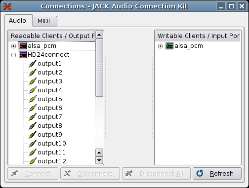

HD24connect supports both PortAudio and JACK under Linux, and will use whatever is available at the time audio is activated. To enable JACK output, make sure HD24connect is not playing back audio, then start jackd in the usual way (most people use qjackctl). Clicking the STOP button on the Recorder tab in HD24connect will allow HD24connect to detect jackd and start the JACK client. After this, HD24tools will show up in the connections list in qjackctl:

From that point on, you need to connect the track outputs of HD24connect to the audio inputs of the application that you want to route the audio to, for instance Ardour. You can use qjackctl to do this. If you want to stop using JACK, close down the JACK server. When HD24connect detects that JACK is no longer available, it will fall back to PortAudio for audio playback.